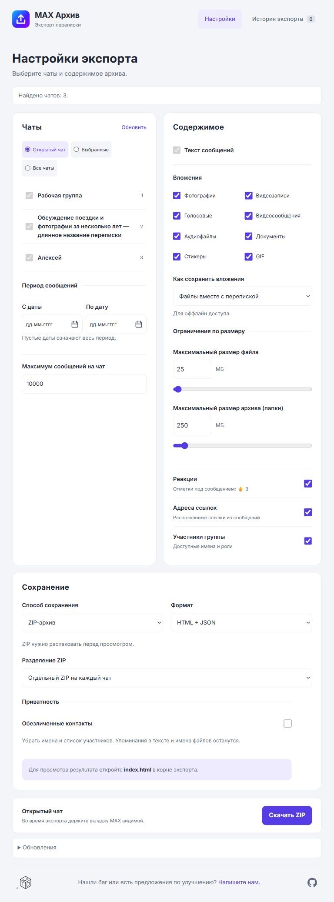

MAX Архив0.3.17 · тестовая версия
MAX Архив0.3.17 · тестовая версияПереписка MAX
в архиве на компьютере
Выберите один чат, несколько или все найденные
в текущей папке MAX.

Скачать ZIPСообщения и выбранные вложения
MAX Архив0.3.17 · тестовая версияВыберите один чат, несколько или все найденные
в текущей папке MAX.

MAX Архив0.3.17 · тестовая версияЧитаемый HTML остаётся на вашем компьютере.